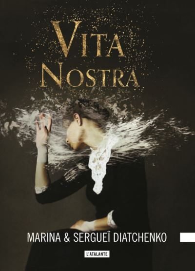
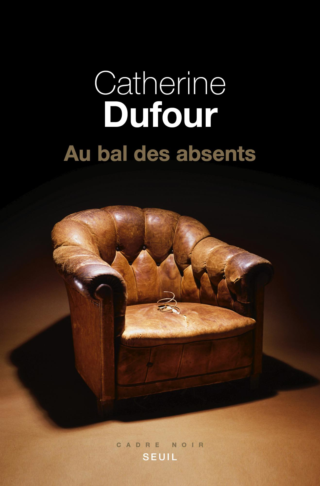
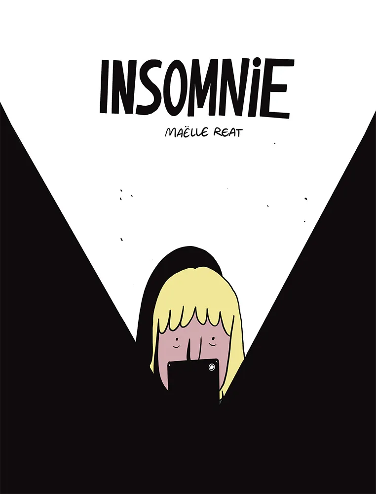
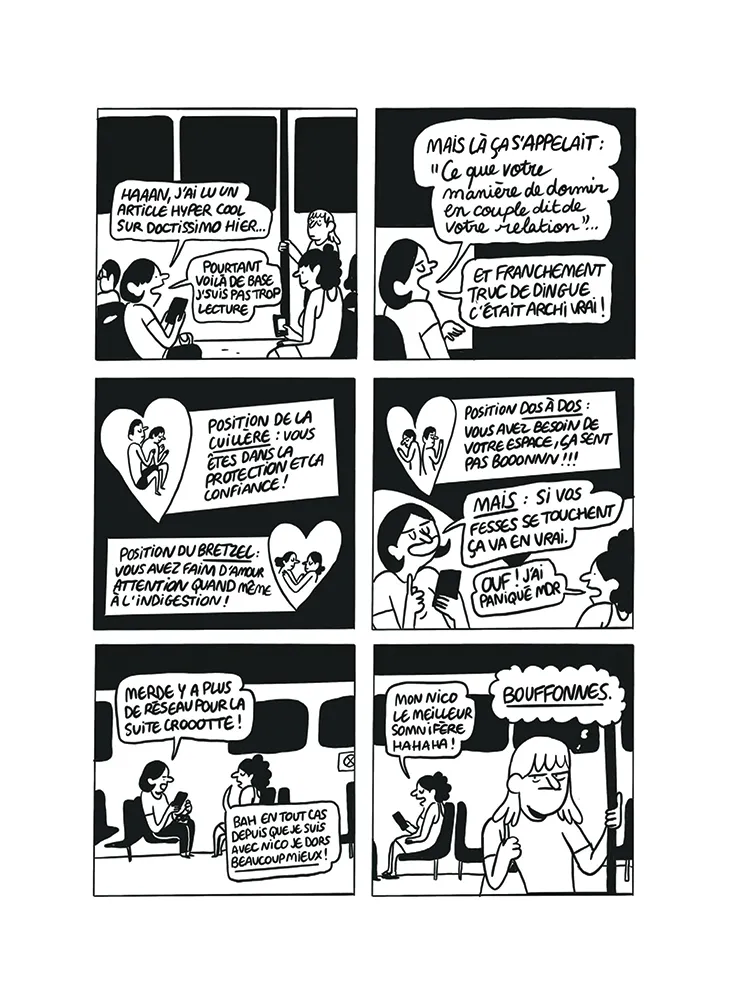

Ce mois-ci, le thème du club de lecture était “insomnie”, un sujet que je connais bien étant donné qu’aussi loin que je me souvienne j’ai toujours eu un sommeil contrarié.

Un roman m’est vite apparu une comme une évidence, en cela qu’il m’a valu des débuts de nuits fiévreux plus occupés à me demander ce que j’étais en train de lire qu’à essayer de dormir : Vita Nostra, des Ukrainiens Marina et Sergueï Diatchenko. Lors de sa parution en français en 2019, il a suffisamment fait parler de lui pour attirer mon attention. Je me rappelle avoir été totalement déstabilisé par ce récit qu’on pourrait qualifier d’initiatique, celui d’une jeune femme forcée de rejoindre une école de magie au fonctionnement incompréhensible, souvent injuste, voire révoltant. Plus de cinq ans après, je m’en souviens comme d’une lecture marquante liée à des endormissements difficiles.

Dans celui-ci, c’est surtout la protagoniste qui souffre d’insomnie. Au bal des absents est un de mes livres préférés, même si je constate avec tristesse que ma mémoire commence à faire défaut (ma lecture datant de bientôt six ans, déjà). Dans ce roman de Catherine Dufour, une quadragénaire précaire accepte d’habiter pendant quelques semaines un manoir isolé dans le but d’enquêter sur la disparition d’une famille d’Américains. Dès sa première nuit sur place, elle découvre toutefois qu’elle n’est pas tout à fait seule : elle ne va pas beaucoup dormir pendant le reste du récit. Elle ne va pas non plus se laisser faire. Certains passages horrifiques ont très bien marché sur moi, perturbant sérieusement l’une ou l’autre soirée, mais l’écriture de l’autrice peut suffire à happer et à faire perdre le sommeil.

Enfin, j’ai sélectionné une BD au nom on ne peut plus en lien avec le sujet : Insomnie, de Maëlle Reat. Parue aux éditions Exemplaire en 2023, elle raconte sur un mode autobiographique les déboires d’une jeune femme insomniaque et ses multiples tentatives pour parvenir à dormir plus de 2h par nuit. Vers la moitié du livre, ce dernier évolue vers le récit d’une relation abusive qui, là encore, ne favorise pas la qualité du sommeil. C’est une BD rigolote (notamment grâce au dessin très expressif en noir et blanc), une sorte de tranche de vie qui se picore ou se lit d’une traite, ça marche dans les deux cas.
